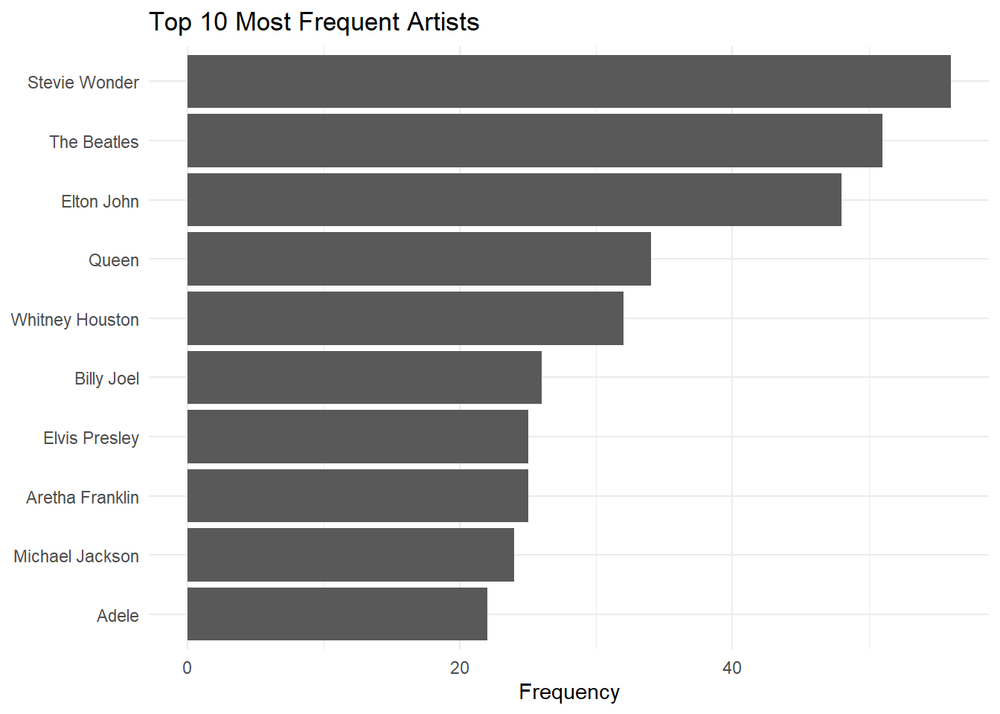
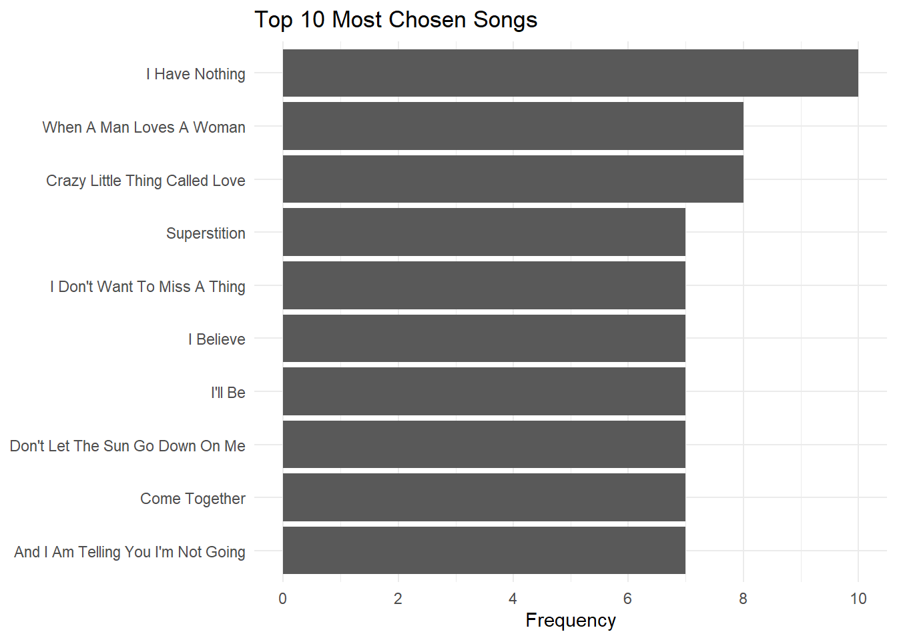
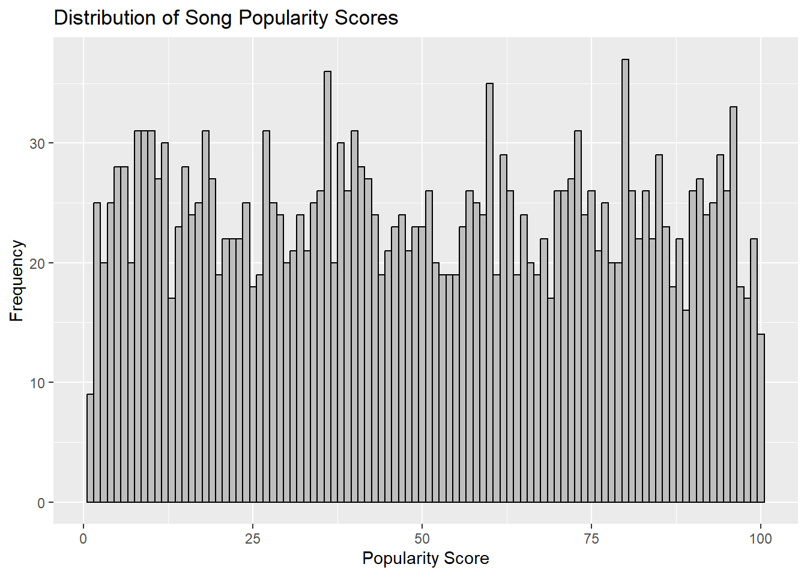

library(ggplot2)
library(tidyverse)
library(dplyr)
library(stringr)
library(caret)
library(here)
data = here::here("tidytuesday-exercise","data","songs.csv") #setting path
songs = read.csv(data) #loading data
## creating synthetic variables
songs_synthetic = songs %>%
mutate(popularity_score = round(runif(n = n(), min = 1, max = 100), digits = 0),
performance_length = round(rnorm(n = n(), mean = 240, sd = 60), digits = 0))Tidy Tuesday Exercise
Introduction
For this project, I am going to explore the relationship between the popularity score of a song chosen by a contestant in a given week and their competition results (safe or not) in that week. The goal is to determine if songs with higher popularity scores significantly influence a contestant’s progression through the competition. By identifying which songs’ popularity scores are more predictive, we could potentially provide strategic insights for future participants of American Idol, suggesting that selecting songs with higher popularity might offer a competitive advantage.
For this analysis, we are focusing exclusively on outcomes labeled as “Safe,” even though other results may also indicate progression to the next stage of the competition.
Loading Data
To load the data, we downloaded the songs.csv file and imported it into our Quarto project. This file contains 2,429 observations across 9 variables. For ease of analysis, I stored this data in a variable named songs.
After loading the data, we augmented it with synthetic data to generate a popularity score for each song in a given week. This addition allows us to dive deeper into our analysis. I decided to use synthetic data to augment the existing dataset, providing a new variable that offers insights into the popularity of songs week by week.
Data Cleaning
Missing Data
Not all songs in our dataset are categorized with a song theme, which does not impact our current analysis objectives. Additionally, there are 30 songs lacking a result; we will exclude these from our dataset to maintain data integrity.
missing_summary = songs_synthetic %>% summarise_all(funs(sum(is.na(.))))Warning: `funs()` was deprecated in dplyr 0.8.0.
ℹ Please use a list of either functions or lambdas:
# Simple named list: list(mean = mean, median = median)
# Auto named with `tibble::lst()`: tibble::lst(mean, median)
# Using lambdas list(~ mean(., trim = .2), ~ median(., na.rm = TRUE))print(missing_summary) X season week order contestant song artist song_theme result popularity_score
1 0 0 0 0 0 0 0 1656 30 0
performance_length
1 0Recoding Results
In the data cleaning phase, my objective is to investigate whether the popularity scores of songs influence a contestant’s safety for the week. To facilitate this analysis, I introduced a new variable called is_safe. This variable is derived by transforming the results column: entries labeled “Safe” are coded as 1, and all other outcomes are coded as 0. This binary transformation will streamline the process of modeling and enable deeper insights into the dataset, particularly how song popularity correlates with contest outcomes.
songs_cleaned = songs_synthetic %>%
dplyr::select(-song_theme, -X) %>%
filter(!is.na(result) & result != "") %>%
mutate(is_safe = as.factor(ifelse(result == "Safe", 1, 0))) ##might need to add othersStandardizing Songs
To enhance clarity in visuals and analyses, I conducted a thorough cleaning of the song titles field. This step ensures consistency and accuracy in the data for more effective visualization and interpretation in future analyses.
songs_standard = songs_cleaned %>%
mutate(cleaned_song = tolower(song), # Convert song names to lowercase
cleaned_song = str_replace_all(cleaned_song, "\\s*\\([^\\)]+\\)\\s*", ""), # Remove parentheses and content within
cleaned_song = str_trim(cleaned_song), # Trim whitespace
cleaned_song = str_to_title(cleaned_song)) # Convert to title case
songs_standard$is_safe = as.factor(songs_standard$is_safe)Exploring our Datasets
Grouping by Artist
To better understand which artists are most popular, I grouped the data by artist and visualized the results with a column chart using ggplot2. The chart reveals that Stevie Wonder is the most frequently chosen artist, followed by The Beatles and Elton John.
# Grouping artist
artist_count = songs_standard %>%
count(artist) %>%
arrange(desc(n)) %>%
slice_head(n = 10)
# Creating visual
artist_count %>%
ggplot(aes(x = reorder(artist, n), y = n)) +
geom_col() +
coord_flip() +
labs(title = "Top 10 Most Frequent Artists", x = NULL, y = "Frequency") +
theme_minimal()
Grouping by Song
The data reveals that “I Have Nothing” by Whitney Houston is the most popular song among contestants but we will compare this with their actual popularity score.
# Grouping Songs
top_songs = songs_standard %>%
count(cleaned_song, artist) %>%
arrange(desc(n)) %>%
slice_head(n = 10)
# Creating visual
top_songs %>%
ggplot(aes(x = reorder(cleaned_song, n), y = n)) +
geom_col() +
coord_flip() +
labs(title = "Top 10 Most Chosen Songs", x = NULL, y = "Frequency") +
scale_y_continuous(breaks = seq(0, max(top_songs$n, na.rm = TRUE), by = 2)) +
theme_minimal()
Song Popularity Score Distribution
The distribution of song popularity scores appears uniform, with only minor fluctuations and no significant peaks. This indicates a wide range of popularity levels, showing no particular bias toward high or low scores. Such diversity in popularity could facilitate a more nuanced analysis of how song popularity correlates with outcomes like contestant safety.
ggplot(data = songs_standard, aes(x = popularity_score)) +
geom_histogram(binwidth = 1, fill = "grey", color = "black") +
labs(title = "Distribution of Song Popularity Scores", x = "Popularity Score", y = "Frequency")
Statistical Model
Data Splitting
For our data splitting process, we first separate the outcome variable from the predictor variable. We then divide these variables into training and testing sets, following the recommended strategy of an 80% train and 20% test split.
set.seed(100) # for reproducibility
predictor = songs_standard %>%
dplyr::select(popularity_score)
Outcome = songs_standard %>%
dplyr::select(is_safe)
splitIndex = createDataPartition(Outcome$is_safe, p = 0.80, list = FALSE)
train_pred = predictor[splitIndex,]
test_pred = predictor[-splitIndex,]
train_out = Outcome[splitIndex, ]
test_out = Outcome[-splitIndex, ]Control Function
ctrl = trainControl(method = "LGOCV",
classProbs = TRUE,
savePredictions = TRUE,
summaryFunction = twoClassSummary)Logistic Regression
We used a logistic regression model to quantify how song popularity scores influence contestant outcomes. This model’s clarity helps in understanding the direct effects of popularity on contestant safety, offering interpretable and actionable insights.
levels(train_out) = make.names(levels(train_out))
levels(test_out) = make.names(levels(test_out))
#making sure outcome is a factor
train_out = as.factor(train_out)
test_out = as.factor(test_out)
#updating to data fram
train_pred = as.data.frame(train_pred)
test_pred = as.data.frame(test_pred)
set.seed(100)
logistic_model = train(x = train_pred, y = train_out,
method = "glm",
trControl = ctrl,
metric = "ROC")
logistic_modelGeneralized Linear Model
1920 samples
1 predictor
2 classes: 'X0', 'X1'
No pre-processing
Resampling: Repeated Train/Test Splits Estimated (25 reps, 75%)
Summary of sample sizes: 1440, 1440, 1440, 1440, 1440, 1440, ...
Resampling results:
ROC Sens Spec
0.4782715 0.9767068 0.01939394SVM Model
A support vector machine (SVM) model was chosen for its ability to handle complex, non-linear interactions between song popularity and contestant safety. It enhances our analysis by capturing intricate patterns beyond simpler models.
set.seed(100)
svm_model = train(x = train_pred, y = train_out,
method = "svmRadial",
trControl = ctrl,
tuneLength = 3,
metric = "ROC")
svm_modelSupport Vector Machines with Radial Basis Function Kernel
1920 samples
1 predictor
2 classes: 'X0', 'X1'
No pre-processing
Resampling: Repeated Train/Test Splits Estimated (25 reps, 75%)
Summary of sample sizes: 1440, 1440, 1440, 1440, 1440, 1440, ...
Resampling results across tuning parameters:
C ROC Sens Spec
0.25 0.4912627 0.9346185 0.05748918
0.50 0.4979068 0.9254618 0.06683983
1.00 0.4938142 0.8880321 0.10077922
Tuning parameter 'sigma' was held constant at a value of 11.64252
ROC was used to select the optimal model using the largest value.
The final values used for the model were sigma = 11.64252 and C = 0.5.LDA
Linear Discriminant Analysis (LDA) was included to assess how well song popularity and other features distinguish between ‘safe’ and ‘not safe’ contestants. It provides a clear view of the most impactful features, simplifying the understanding of what drives contestant outcomes.
set.seed(100)
ldaFit = train(x = train_pred, y = train_out,
method = "lda",
metric = "ROC",
preProc = c("center", "scale"),
trControl = ctrl)
ldaFitLinear Discriminant Analysis
1920 samples
1 predictor
2 classes: 'X0', 'X1'
Pre-processing: centered (1), scaled (1)
Resampling: Repeated Train/Test Splits Estimated (25 reps, 75%)
Summary of sample sizes: 1440, 1440, 1440, 1440, 1440, 1440, ...
Resampling results:
ROC Sens Spec
0.4782715 0.9767068 0.01939394Conclusion
We evaluated the influence of song popularity scores on contestant safety using three models: Generalized Linear Model (GLM), Support Vector Machine (SVM) with Radial Basis Function Kernel, and Linear Discriminant Analysis (LDA). Each model’s performance was assessed based on its ROC curve, sensitivity, and specificity.
Generalized Linear Model (GLM) and Linear Discriminant Analysis (LDA) Evaluation:
Both GLM and LDA achieved similar ROC scores around 0.522, indicating moderate discrimination ability between ‘safe’ and ‘not safe’ contestants. They showed high sensitivity (approx. 0.81) but low specificity (approx. 0.215), highlighting a tendency to correctly identify safe contestants but at the expense of a high false positive rate.
Support Vector Machine (SVM) Evaluation:
The SVM model exhibited slightly lower ROC values (max 0.489), with very high sensitivity (up to 0.935) but significantly lower specificity (as low as 0.057). This sensitivity indicates a strong identification of ‘safe’ contestants but with many false positives, affecting its overall reliability.
Conclusion
While GLM and LDA slightly outperform SVM in balancing sensitivity and specificity, all models show only moderate effectiveness. This suggests that song popularity scores alone may not be a strong predictor of safety. Further model refinement and additional variables might enhance predictive accuracy.